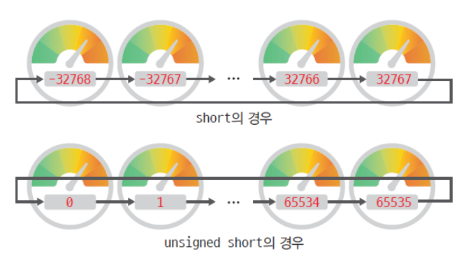

Chapter 1. 변수와 자료형¶
'쉽게 풀어쓴 C언어 Express - 천인국' 4장 학습 내용
1절. 변수¶
변수는 어디에 만들어지는가?¶
- 변수는 메인 메모리에 만들어진다.
- 변수 이름을 사용해서 메모리 공간을 사용한다.
변수는 왜 필요한가?¶
- 변수는 사용자에게 받는 데이터를 저장하는 장소이다.
- 변수가 없다면 사용자로부터 받은 데이터를 저장할 수 없다.
변수와 상수¶
- 변수(Variable) : 저장된 값의 변경이 가능한 공간
- 상수(Constant) : 저장된 값의 변경이 불가능한 공간
- ex) 3.14, 100, 'A', "Hello, World!"
원의 면적 계산 예제 코드¶
#include <stdio.h>
#define PI 3.141592 // PI를 3.141592로 정의한다.
int main(void){
double radius; // 원의 반지름을 저장할 변수를 선언한다.
double area; // 원의 면적을 저장할 변수를 선언한다.
printf("원의 반지름을 입력해라 :"); // 원의 반지름을 입력하라고 출력한다.
scanf("%lf", &radius); // 원의 반지름을 변수 radius에 저장한다.
area = PI * radius * radius; // 원의 면적 area를 계산한다.
printf("원의 면적 : %lf\n", area); // 원의 면적을 출력한다.
return 0;
}
2절. 데이터타입¶
변수타입¶
- 변수의 타입은 3가지로 나눌 수 있다.
- 정수형 : short, int, long, long long
- 실수형 : float, double, long double
- 문자형 : char
자료형 크기 비교 예제 코드¶
#include <stdio.h>
int main(void){
int x; // 정수형 변수 x를 선언
printf("변수 x의 크기 : %d\n", sizeof(x)); // 변수 x의 크기 : 4
printf("char형의 크기 : %d\n", sizeof(char)); // char형의 크기 : 1
printf("int형의 크기 : %d\n", sizeof(int)); // int형의 크기 : 4
printf("short형의 크기 : %d\n", sizeof(short)); // short형의 크기 : 2
printf("long형의 크기 : %d\n", sizeof(long)); // long형의 크기 : 4
printf("float형의 크기 : %d\n", sizeof(float)); // float형의 크기 : 4
printf("double형의 크기 : %d\n", sizeof(double)); // double형의 크기 : 8
return 0;
}
정수형¶
- 정수형은 short, int, long, long long이 있다.
| 정수형 | 비트 | 범위 |
|---|---|---|
| short | 16비트 | -32768 ~ 32767 |
| int | 32비트 | -2147483648 ~ 2147483647 |
| long | 32비트 | -2147483648 ~ 2147483647 |
| long long | 64비트 | -9,223,372,036,854,775,808 ~ 9,223,372,036,854,775,807 |
실수형¶
- 실수형은 float, double, long double이 있다.
| 실수형 | 비트 | 범위 |
|---|---|---|
| float | 32비트 | 1.175494e-38~3.402823e+38 |
| double | 64비트 | 2.225074e-308~1.797693e+308 |
| long long | 64비트 | 2.225074e-308~1.797693e+308 |
문자형¶
- 문자형은 char이 있다.
| 문자형 | 비트 | 범위 |
|---|---|---|
| char | 8비트 | -128~127 |
변수 선언 예제 코드¶
#include <stdio.h>
int main(void){
int Number1; // 'Number1'이라는 정수형 int 변수 선언
short Number2; // 'Number2' 라는 정수형 short 변수 선언
long Number3; // 'Number3' 라는 정수형 long 변수 선언
double Number4; // 'Number4' 라는 실수형 double 변수 선언
char Character1; // 'Character1' 이라는 문자형 char 변수 선언
return 0;
}
signed, unsigned¶
- unsigned
- 음수가 아닌 값만을 나타낸다.
- unsigned int
- unsigned int는 0 ~ 4294967295의 범위를 가진다.
- signed
- 부호를 가지는 값을 나타낸다.
- 흔히 생략한다.
- (signed)int는 -2147483648 ~ 2147483647의 범위를 가진다.
unsigned 수식자 예제 코드¶
#include <stdio.h>
int main(void){
unsigned int speed; // 부호 없는 int형
unsigned distance; // unsigned int distance와 같다.
unsigned short players; // 부호 없는 short형
unsigned long seconds; // 부호 없는 long형
unsigned int sales = 2800000000 // 약 28억
printf("%u\n", sales); // %d를 사용하면 음수로 출력되니 주의하기
return 0;
}
3절. 오버플로우¶
오버플로우란?¶
- 오버플로우(overflow)는 변수가 나타낼 수 있는 범위를 넘는 숫자를 저장하려고 할 때 발생한다.
- 오버플로우는 규칙성이 있다.

4절. 기호 상수¶
기호 상수란?¶
- 기호 상수(Symbolic Constant): 기호를 이용하여 상수를 표현한 것이다.
- 가독성이 높아진다.
-
값을 쉽게 변경할 수 있다.
-
area = 3.141592 * radius * radius;
-
area = PI * radius * radius;
- income = salary - 0.15 * salary;
-
income = salary - TAX_RATE * salary;
-
기호 상수 사용법
-
define 사용¶
- const 사용
기호 상수 예제 코드 - 연봉과 세금 계산¶
#include <stdio.h>
#define TAX_RATE 0.2 // 기호 상수를 이용해서 TAX_RATE를 0.2로 선언
int main(void){
const int MONTHS = 12; // 기호 상수를 이용해서 MONTHS를 12로 선언
int m_salary, y_salary; // m_salary와 y_salary를 변수로 선언
printf("월급을 입력하세요 :");
scanf("%d",&m_salary); // 입력받은 월급을 m_salary에 저장
y_salary = MONTHS * m_salary; // y_salary에 월급과 달 수를 곱한 값 저장
printf("연봉은 %d 입니다.", y_salary); // 연봉 출력
printf("세금은 %lf 입니다.", y_salary * TAX_RATE); // 세금 출력
return 0;
}